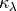
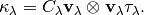
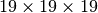
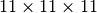
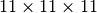
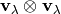
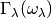
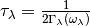
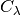

Auxiliary tools¶
kaccum¶
Cumulative physical properties with respect to frequency or mean free path are calculated using this command.
For example, cumulative thermal conductivity is defined by

where  of phono3py for single-mode RTA is given as

(The notations are found in http://arxiv.org/abs/1501.00691.)
How to use kaccum¶
Let’s computer lattice thermal conductivity of Si using the Si-PBEsol
example found in the example directory.
% phono3py --dim="2 2 2" --pa="0 1/2 1/2 1/2 0 1/2 1/2 1/2 0" -c POSCAR-unitcell --mesh="11 11 11" --sym_fc3r --sym_fc2 --tsym --br
Then using the output file, kappa-m111111.hdf5, run kaccum as follows:
% kaccum --pa="0 1/2 1/2 1/2 0 1/2 1/2 1/2 0" -c POSCAR-unitcell kappa-m111111.hdf5 |tee kaccum.dat
Here --pa is optional. The definition of --pa option is same as
–pa, –primitive_axis: Transformation matrix to primitive cell. POSCAR-unitcell is the unit cell filename that
is specified with -c option.
kappa-m111111.hdf5 is the output file of thermal conductivity
calculation, which is passed to kaccum as the first argument.
The format of the output is as follows: The first column gives frequency in THz, and the second to seventh columns give the cumulative lattice thermal conductivity of 6 elements, xx, yy, zz, yz, xz, xy. The eighth to 13th columns give the derivatives. There are sets of frequencies, which are separated by blank lines. Each set is for a temperature. There are the groups corresponding to the number of temperatures calculated.
To plot the output by gnuplot at temperature index 30 that may correspond to 300 K,
% gnuplot
...
gnuplot> p "kaccum.dat" i 30 u 1:2 w l, "kaccum.dat" i 30 u 1:8 w l
The plot like below is displayed.

General option¶
-c¶
Unit cell filename is specified with this option, e.g., -c
POSCAR-unitcell.
--pwscf¶
Let kaccum read a Pwscf unit cell file with -c option, for example:
kaccum --pwscf --pa="0 1/2 1/2 1/2 0 1/2 1/2 1/2 0" -c Si.in --temperature=300 kappa-m191919.hdf5

--crystal¶
Analogous to --pwscf, but to be used with the CRYSTAL interface.
--temperature¶
Pick up one temperature point. For example, --temperature=300 for
300 K, which works only if thermal conductivity is calculated at
temperatures including 300 K.
--nsp¶
Number of points to be sampled in the x-axis.
kaccum for tensor properties¶
Number of columns of output data is 13 as explained above. With
--average and --trace options, number of columns of output
data becomes 3.
--mfp¶
Mean free path is used instead of frequency for the x-axis. The unit of MFP is Angstrom.
The figure below shows the results of Si example with the
 and  sampling
meshes used for the lattice thermal conductivity calculation. They look
differently. Especially for the result of the  sampling mesh, the MFP seems converging but we can see it’s not
true to look at that of the sampling
mesh. To show this type of plot, be careful about the sampling mesh
convergence.
sampling
meshes used for the lattice thermal conductivity calculation. They look
differently. Especially for the result of the  sampling mesh, the MFP seems converging but we can see it’s not
true to look at that of the sampling
mesh. To show this type of plot, be careful about the sampling mesh
convergence.

(This plot is based on the Si-PBEsol example.)
--gv¶
Outer product of group velocities  (in THz^2 x Angstrom^2)
--average¶
Output the traces of the tensors divided by 3 rather than the unique elements.
--trace¶
Output the traces of the tensors rather than the unique elements.
kaccum for scalar properties¶
For the following properties, those intensities are normalized by the number of grid points. Number of columns of output data is three, frequency, cumulative property, and derivative of cumulative property such like DOS.
--gamma¶
 (in THz)
--tau¶
Lifetime  (in ps)
--cv¶
Modal heat capacity  (in eV/K)
--gv_norm¶
Absolute value of group velocity  (in
THz x Angstrom)
(in
THz x Angstrom)
--pqj¶
Averaged phonon-phonon interaction  (in eV^2)
(in eV^2)
kdeplot¶
This script is under the development and may contain bugs. But a feature is briefly introduced below since it may be useful. Scipy is needed to use this script.
This script plots distribution of phonon modes in the frequency-lifetime plane. Its density is estimated using Gaussian-KDE using scipy.
kdeplot reads a result of the thermal conductivity calculation as
the first argument:
% kdeplot --nbins=200 kappa-m191919.hdf5
(This may take long time. On a relatively fast machine, it took 20 mins.)
After finishing the calculation, the plot is saved in
lifetime.png. The black dots show the phonon modes. The density is
estimated from these dots. The drawing area is automatically set to
make look good, e.g, higher lifetime side is not drawn if the density
is negligible.

(This plot is based on the Si-PBEsol example.)
Option¶
--temperature¶
Pick up one temperature point. For example, --temperature=300 for
300 K, which works only if thermal conductivity is calculated at
temperatures including 300 K.
Without specifying this option, the 31st temperature index is chosen. This often corresponds to 300 K if phono3py ran without setting temperature range and step.
--nbins¶
This option controls the resolution of the density plot. The default value is 100.
--cutoff, --fmax¶
The option --cutoff (--fmax) sets the maximum value of
lifetime (frequency) to be included as data points. Normally increasing
this value from the chosen value without specifying this option
does nothing since automatic control of drawing area cut high lifetime
(frequency) side if the density is low.